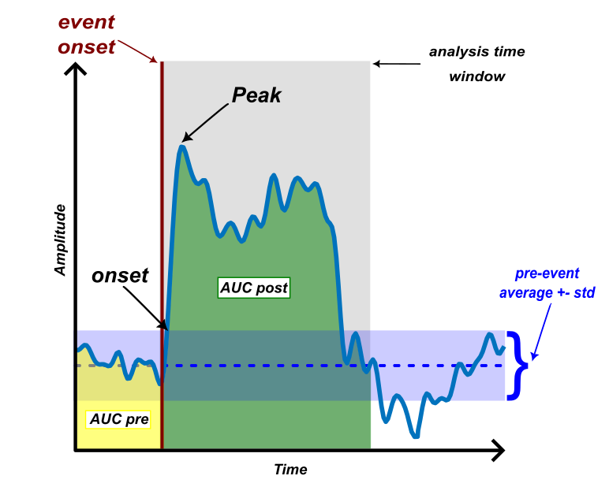

Multiplication factor for the standard deviation of the pre-event period. This value is used as a threshold to calculate the response onset parameter. If the responses do not cross this threshold, the onset data will return as NaN.
Calculates the amplitude and latencies from ROI event-triggered data.
This function calculates the following features from the responses to events:
The response peak is the maximum - or minimum if the response polarity is negative - in the time window post-event set in the parameters. The onset value is the first point where the signal crosses the threshold, set in the parameters as a multiple of the standard deviation of the signal in the pre-event time.
The peak, onset and time-window average amplitudes are calculated as their values minus the baseline level, which is the median of the pre-event period. The latencies are calculated in seconds from the first post-event frame (time 0), so a response peaking on that frame has a latency of 0 s. The onset and peak latencies are defined only for ROIs that cross the threshold; otherwise they are NaN.
The AUC amplitude is calculated as the area under the baseline-corrected response in the post-event time window, ignoring NaN samples. The peak amplitude and the AUC amplitude are reported for every ROI, even when the response does not cross the threshold. With negative polarity, the trace is sign-flipped before the features are computed, so the amplitudes report the positive magnitude of the negative-going response.

Prepare the input in this order:
split_data_by_event → getDataFromROI → calculateResponseFeatures
The final input must be a .umt file holding a kind='roi' UMT with entry dimensions {'ROI','T','E'}, top-level eventInfo.eventAxisMode='instances' and eventInfo.baselinePeriod, and entry.meta.FrameRateHz. The function cannot derive or accept substitutes for missing event metadata.
Alternative event-splitting producers
split_data_by_event is the usual producer, not a hard dependency. Any producer of valid event-split image data (a .dat file with a matching events.mat, or an image UMT with the required metadata) can start the chain. getDataFromROI also accepts continuous image data, but it cannot create event metadata that is absent from its input.
See Exploring temporal traces for the related interactive ROI workflow.
This function accepts only the name or path of a .umt file holding a ROI UMT produced by the required workflow above, with one entry using dimensions {'ROI','T','E'}. UMT structs in memory, numeric arrays and other file types are not supported. The file is loaded fully into memory, which is small compared with the image data it was reduced from.
The output is a ROI UMT, saved as a .umt file (default name RespFeatures.umt), containing the response features stated in the description, with dimensions {'ROI','Measure','E'}. Each E slice is one event instance and is analyzed independently; repetitions are not averaged by this function.
For additional details on the data structure of the output file, please click here.
Multiplication factor for the standard deviation of the pre-event period. This value is used as a threshold to calculate the response onset parameter. If the responses do not cross this threshold, the onset data will return as NaN.
Polarity of the response. It is worth noting that bipolar responses (with positive and negative elements) are not covered by this function.
Time window in which the response features (peak, onset and AUC) will be calculated. If set to "all" (default), all period post-event onset will be used. Otherwise, provide a pair of values [start end], in seconds, representing the start and end of the time period relative to the first frame after the baseline period (time 0). For instance, if you want to calculate the response in a time window of 2 seconds but ignore the first 0.5 seconds of the response, the TimeWindow_sec value is set as [0.5 2.5].